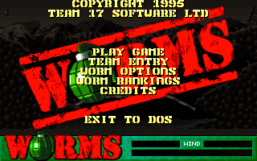
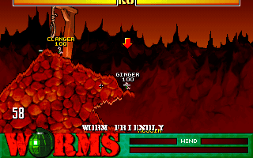
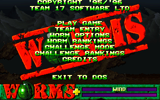

名稱：百戰天蟲1 (Worms，英文版)
簡介：Team 17 1995年出品的回合制戰術遊戲，由Ocean代理發行。1996年繼續推出「增援
（Reinforcements）」資料片，以及整合二者的「聯合版（United）」 [待補]。



備註：本版為聯合版
保護：光碟版為光碟，磁片版為字串密碼，磁片版破解碼：
WRMS.EXE
74 0C B8 01 00 00 00 E8 08
EB -- -- -- -- -- -- -- --
備註：安裝增援資料片時，必須放入主程式光碟（需含有BLACK.EXE，較舊主程式光碟沒有）。
備註：聯合版執行後，按S略過開頭動畫，或按N播放開頭動畫。
檔案：worms-disk.rar = 磁片版主程式
wormplus.rar = 光碟版主程式+資料片